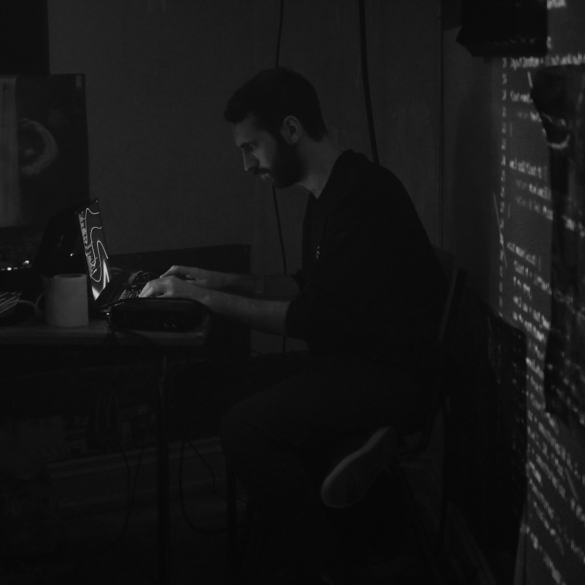

About
I'm Mateo, a digital artist based in Zaragoza, Spain. I make a wide variety of digital media such as music videos, motion graphics, visualizers for live events, video games and interactive experiences.
I have a Bachelor's Degree in Informatics Engineering and a Master's Degree in Robotics, Graphics and Computer Vision. My work focuses on the application of realtime rendering and graphics programming techniques for the development of a wide variety of audiovisual productions.
I am part of Pure Life, a Manchester-based music label and art collective, working with a global network of artists and musicians developing a wide variety of audiovisual productions.

Photo by Virtua Lumin, 2022, London, UK.